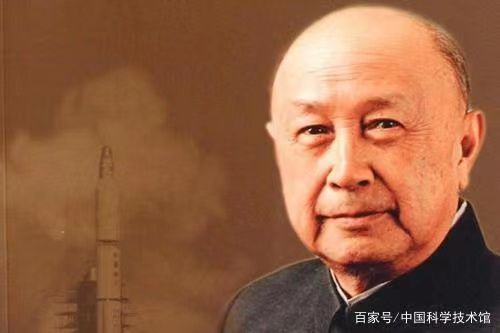
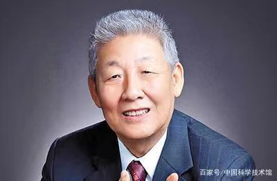
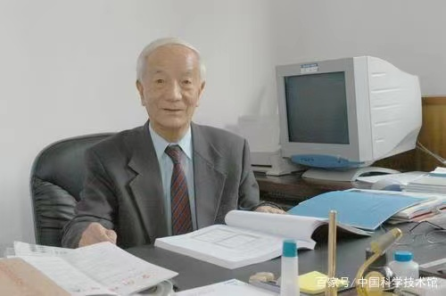

默默无闻的、为国家科技做贡献的人
为祖国科技做出贡献的人们
文章作者: Entropy
发布日期: 2022.03.28

钱学森，1911年出生在上海，是世界著名的科学家、空气动力学家，中国载人航天奠基人，被誉为“中国航天之父”“中国导弹之父”。当新中国成立后，钱学森决定回国，用自己的专长为新中国服务，不过却遭到了美国移民局的阻挠与监禁，直到1954年中美在瑞士举行日内瓦会谈，事情才出现了转机，钱学森终于结束了长达4年的监禁生活，于1955年9月回到中国。
回国后，钱学森受命组建中国第一个火箭、导弹研究机构——国防部第五研究院，担任首任院长。
此后，钱学森一直担任火箭、导弹和航天器研制的技术领导职务，从东风一号、东风二号导弹发射成功，到有核弹头的中近程地地导弹的发射成功，再到1970年我国第一颗人造地球卫星发射成功，钱学森对中国火箭、导弹和航天事业的发展作出了重大贡献。

孙家栋，中国科学院院士、国际欧亚科学院院士、探月工程总设计师。
1967年，经钱学森推荐，38岁的孙家栋担任我国第一颗人造地球卫星“东方红一号”的总体设计负责人，他在前人的基础上大胆对卫星方案进行了简化设计和研制工程管理，在最短的时间完成了卫星上天的任务。 此后，孙家栋先后担任了我国第一颗遥感探测卫星、第一颗返回式卫星的技术负责人、总设计师，他还是我国通信卫星、同步轨道气象卫星、地球资源卫星、北斗导航卫星等第二代应用卫星的工程总设计师。 在我国自主研制发射的100个航天飞行器中，由孙家栋担任技术负责人、总设计师或工程总设计师的就有34颗，被称为“中国卫星之父”。2010年1月11日，孙家栋在国家科学技术奖励大会上获得“2009年度国家最高科学技术奖”。

王希季，是第一枚探空火箭技术负责人、第一枚卫星运载火箭总体方案设计者、第一颗返回式卫星首任总设计师……他为我国航天事业的发展作出了卓越贡献。
1960年2月，由中国人自己设计研制的液体推进剂探空火箭发射成功。3年后，他们研制的探空火箭又携带40千克重的探测仪器飞上了130千米的高空。 此后，王希季又相继主持了中国第一个卫星运载火箭“长征一号”和中国第一颗返回式卫星的设计工作，使中国成为继美国、苏联之后世界上第三个掌握卫星返回技术的国家。 王希季说：“在技术问题上不能少数服从多数，而是要尊重客观规律，坚持实事求是，有时候少数人坚持的往往是正确的。”这句话值得我们所有人学习。